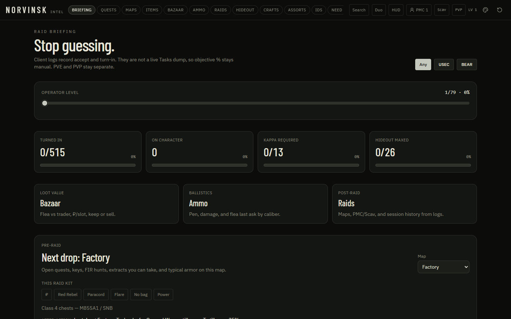

Briefing
The raid board before you load in
One screen for the wipe: what is still on you, what to buy, which map is worth the next drop, and how far Kappa and the bunker have come.
- See turned-in quests, active mail, Kappa remaining, and hideout floors at a glance
- Read the this-raid shopping list with cheapest source, ₽, and restock wait
- Get the next three Kappa quests, this map first
- Keep PVE and PVP progress on separate piles